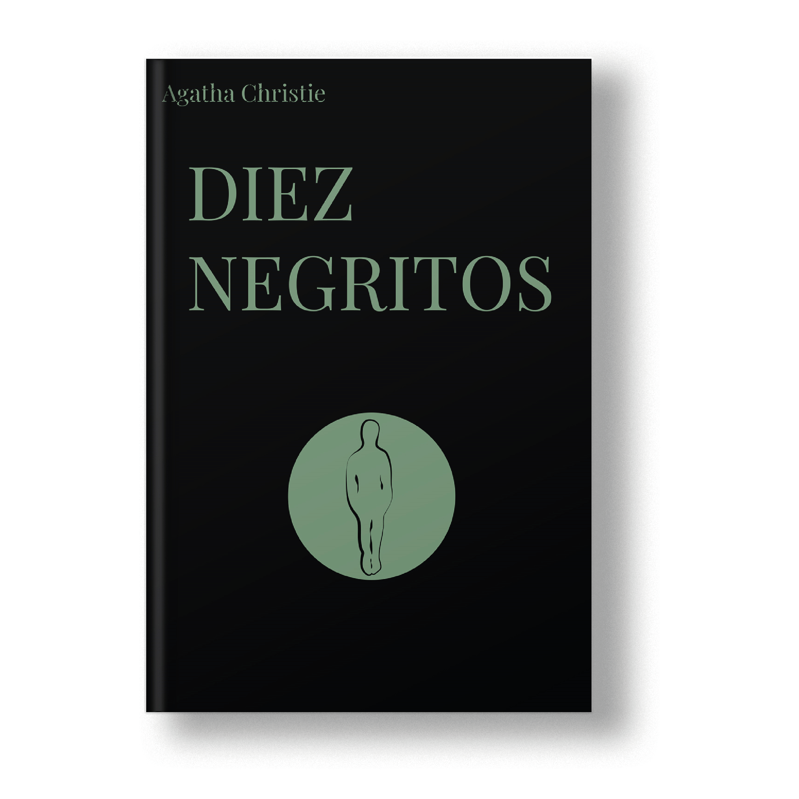
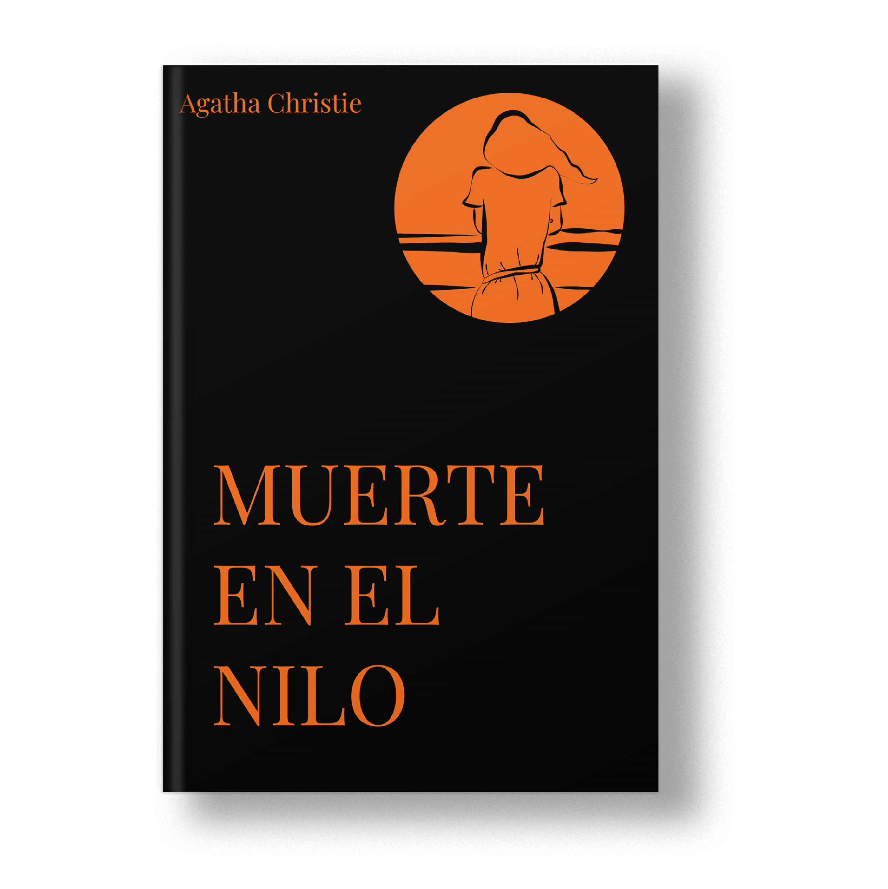
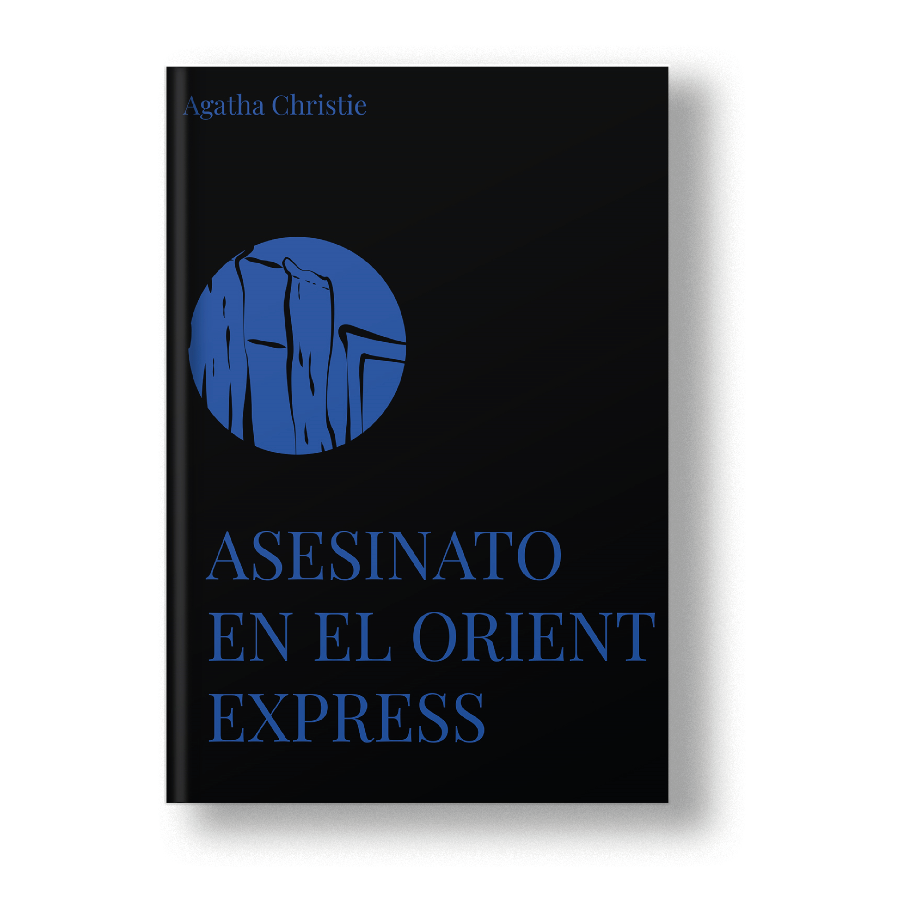
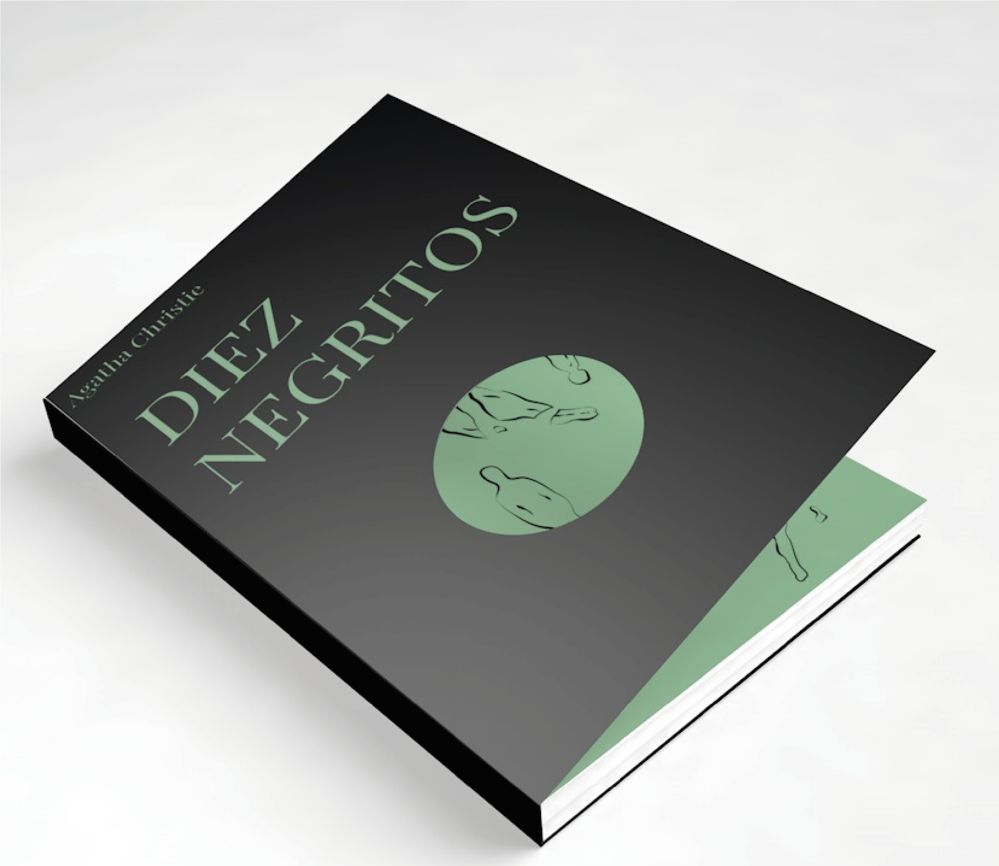
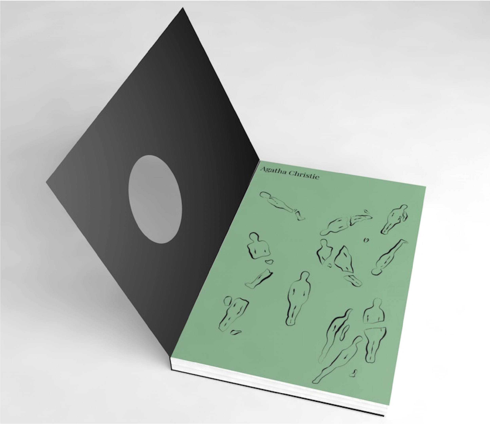
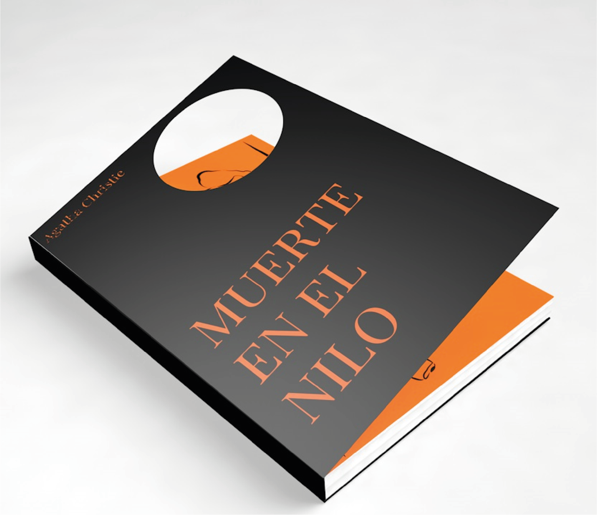
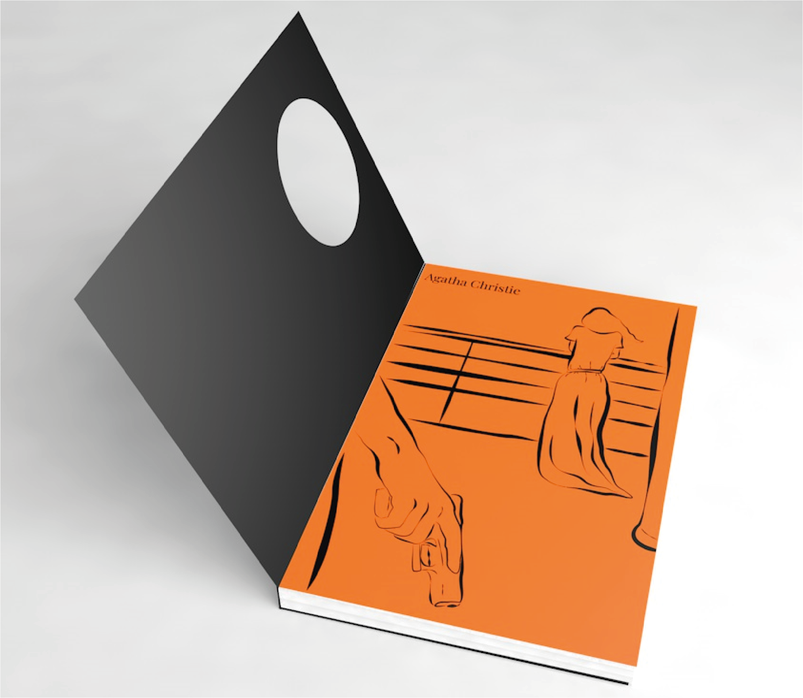
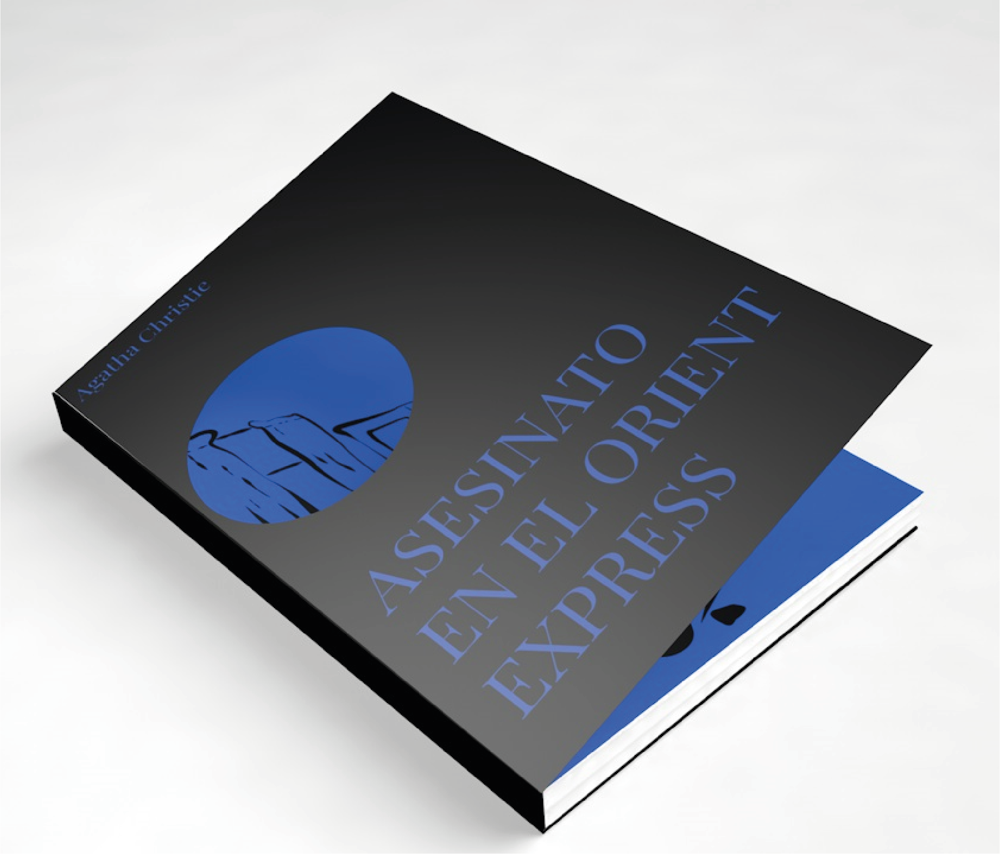
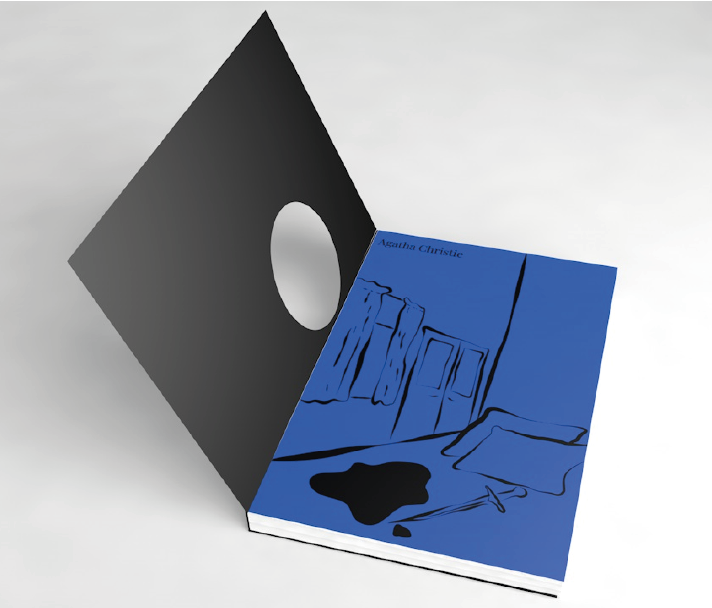

Para este proyecto de rediseñaron las portadas de tres proyectos de Agatha Christie. El elemento que aparece común en los tres rediseños es el troquel, cuando este está puesto, con el libro cerrado, solo se ve una parte del dibujo, y cuando abrimos el libro, vemos la ilustración completa. La idea de esto es que con la tapa puesta solo vemos una parte del dibujo, en la que aparentemente todo está bien, pero cuando este se levanta, al verlo completo, vemos que no era como parecía.